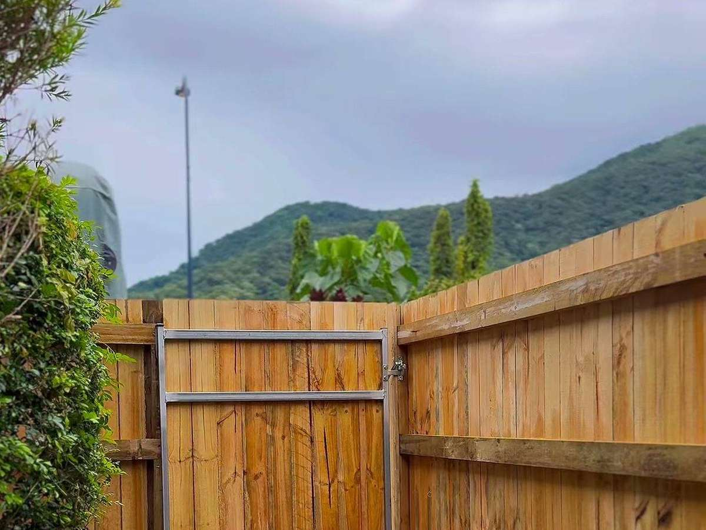
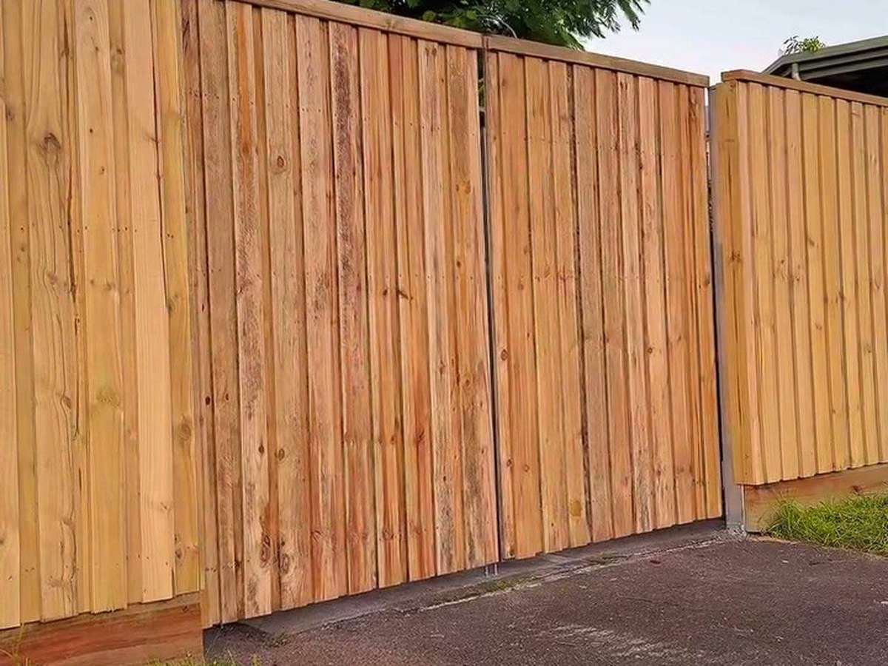

Livestock Fencing
Fencing set out to hold grazing stock, sized to suit the paddock and the country it runs through.
Livestock · Stockyards · Gates · Repairs
S&J Pastoral Fencing Contractors build and repair the fences, yards and gates that run a working property — around Torbanlea, the Fraser Coast and rural Queensland.
What we do
From a boundary line to a set of stockyards, the work is fencing built for the way a property runs.
Fencing set out to hold grazing stock, sized to suit the paddock and the country it runs through.
Working pens and yards for handling livestock, laid out for the way stock moves on the property.
Gates hung so they swing true and latch first time, from the paddock entrance to the yards.
Storm, stock or time — repairs to fences and gates brought back to working order.
Boundary lines cleared and fenced, so the edge of the property does what it should.
Fencing for farms, acreage and rural holdings across the Fraser Coast and beyond.
On the fence line
Timber posts, wire and gates — the sort of rural fencing work a pastoral property needs.


Photos show the kind of rural fencing work we do. They are not photographs of this business’ own jobs.
About
S&J Pastoral Fencing Contractors is a rural fencing contractor working out of Torbanlea, on Queensland’s Fraser Coast.
The trade is pastoral fencing: livestock fencing, stockyards, farm gates and repairs. Every job starts with a look at the country — the ground, the stock and the line the fence has to hold — and a clear quote before any work begins.
Tell us about the fencing and we'll come back to you with a free, no-obligation quote.
Prefer to talk it through? Call, text or email — we reply fast.